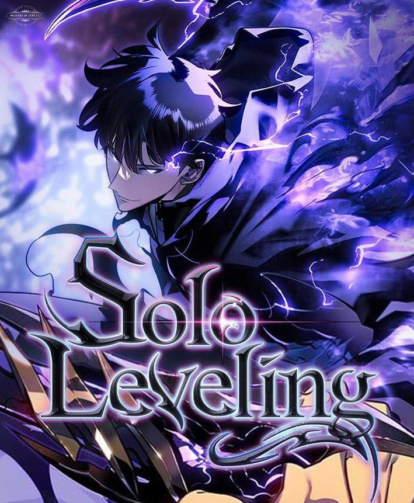
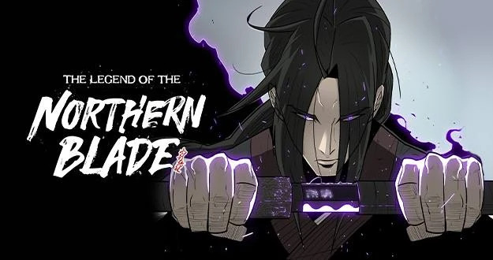

I enjoy immersing myself in various forms of entertainment, particularly playing games and reading. I spend my free time diving into MMORPGs like The Legend of Neverland, where I explore vast virtual worlds and take on thrilling adventures. I also enjoy the competitive nature of MOBAs like Mobile Legends, which allows me to strategize and collaborate with teammates in fast-paced matches. Additionally, I'm an avid reader of manhwa, where I find captivating stories and vibrant artwork that offer a unique escape into different narratives and genres. These hobbies provide a perfect balance of excitement, strategy, and relaxation.
The Legend of Neverland is an anime-style MMORPG by GameArk Global, featuring an open world filled with adventure, character customization, and dynamic gameplay. Players explore a vibrant fantasy realm, engage in battles, complete quests, and enjoy various activities like fishing and crafting, making it an engaging experience for MMORPG fans.
Mobile Legends: Bang Bang is a popular mobile MOBA game by Moonton, featuring fast-paced 5v5 battles where players choose unique heroes and work together to destroy the enemy base. Known for its strategic gameplay and accessibility, it has become a favorite in the global gaming and esports community.

Solo Leveling is a South Korean manhwa about Jinwoo Sung, a weak hunter who gains a unique ability to endlessly level up and become powerful after a near-death experience. The story follows his transformation from the weakest to one of the strongest hunters, uncovering secrets and facing dangerous foes. The series is acclaimed for its captivating story and stunning artwork.
The Legend of the Northern Blade is a manhwa about Jin Mu-Won, the last member of the Northern Heavenly Sect, who trains in secret to avenge his sect's betrayal and destruction. As he grows stronger, he uncovers hidden conspiracies and faces powerful enemies in the martial arts world. The series is known for its intense action and deep storytelling.
